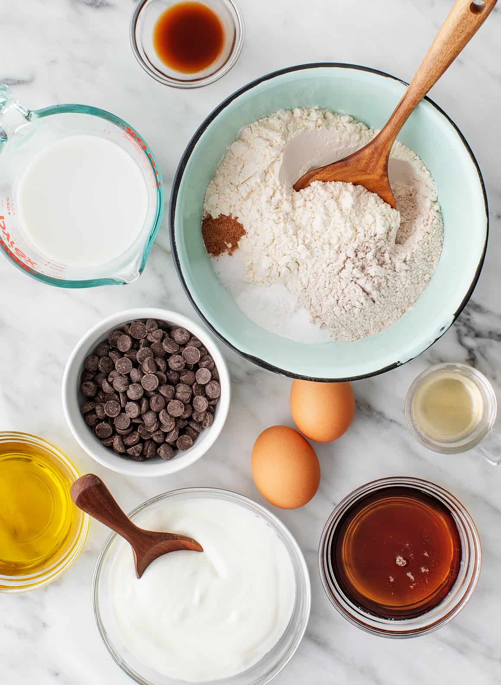
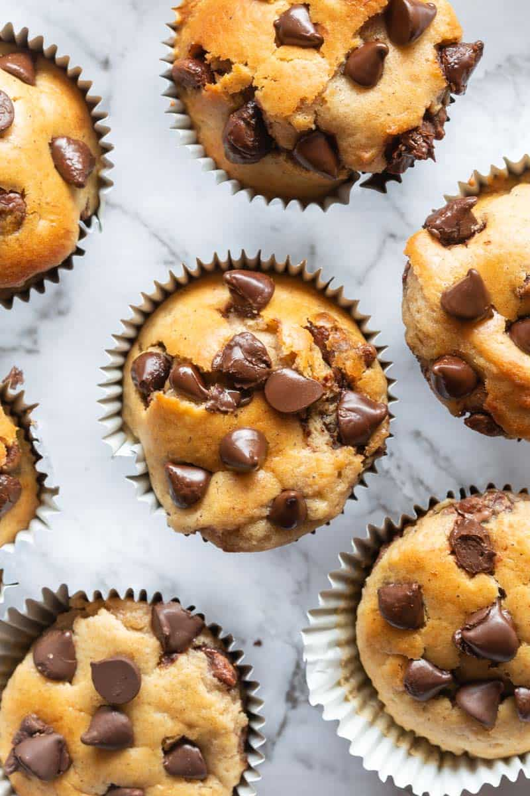

Perfect Pancake
Muffins Recipe
Pancake Muffins are the perfect easy breakfast recipe! Simple to make with the ease of a muffin and the deliciousness of pancakes! A make-ahead favorite!

Prep. Time
5 minutes
Cook Time
15 minutes
Total Time
20 minutes
Servings
36 Muffins

Ingredients
- 2 cups all-purpose flour
- 3 tablespoons granulated sugar
- 1 1/2 teaspoons baking powder
- 1 teaspoon baking soda
- Pinch kosher salt
- 2 cups buttermilk
- 1 egg
- 1/4 cup melted butter
- Maple syrup
Procedures
- Preheat oven to 350º F. Spray a mini-muffin pan with nonstick baking spray or use muffin liners and set aside.
- Whisk together the dry ingredients: flour, sugar, baking powder, baking soda and salt in a large bowl.
- Mix the wet ingredients: buttermilk, egg, and melted butter in a 2-cup measuring cup.
- Pour the buttermilk mixture slowly into the flour mixture, stirring to combine as you pour. Allow the batter to rest for about 3 minutes.
- Scoop pancake batter and fill each indention of mini muffin pan about 1/2 full.
- Bake for 13-15 minutes, until a toothpick inserted in the center comes out clean.
- Serve with warmed maple syrup for dipping.

Nutritions
Calories: 51kcal | Carbohydrates: 7g | Protein: 1g | Fat: 2g | Saturated Fat: 1g | Polyunsaturated Fat: 0.1g | Monounsaturated Fat: 0.5g | Trans Fat: 0.1g | Cholesterol: 9mg | Sodium: 57mg | Potassium: 44mg | Fiber: 0.2g | Sugar: 2g | Vitamin A: 68IU | Calcium: 25mg | Iron: 0.4mg